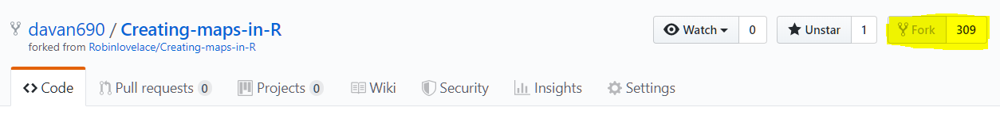

Using GIS for invasive species research
2019-09-06
1 Overview
This respository contains a collection of dynamic programming tools and introductory tutorials for GIS in R.
1.1 Project objectives
The overall objective is to create a landing page and collection of GIS work in R. All the examples will focus on invasive species dynamics for now but will extend to other areas of ecology and research. The current set of goals for this project also meet the requirements needed to produce the figures for my personal reproducible phd research.
1.1.1 Objective One
Produce static maps for the first publication of my PhD. Draft here - Davidson2019a
| Datasets | |
|---|---|
| Beech forest dataset |
1.1.2 Objective Two
Produce static maps for the following data-set [Davidson2019b] [same as above]
1.1.3 Objective Three
Produce static maps for the following data-set [Davidson2019c] [same as above]
1.2 Get started…
Fork this repo here
Pull project into Rstudio using version control.
1567561101782
Ensure that your local RStudio packages are up to date.
For more details this following the same contributing options as the website instructions here.
Note This book is built from the absolute minimum you need to start a bookdown book. You can find the preview of the unmodified template of the book at http://seankross.com/bookdown-start/
- All of the content of this repository is licensed CC0.
The content of the mapping/GIS was orginally forked from from the following github repositories:
- Creating maps in R: A textbook on geocomputational analysis in R